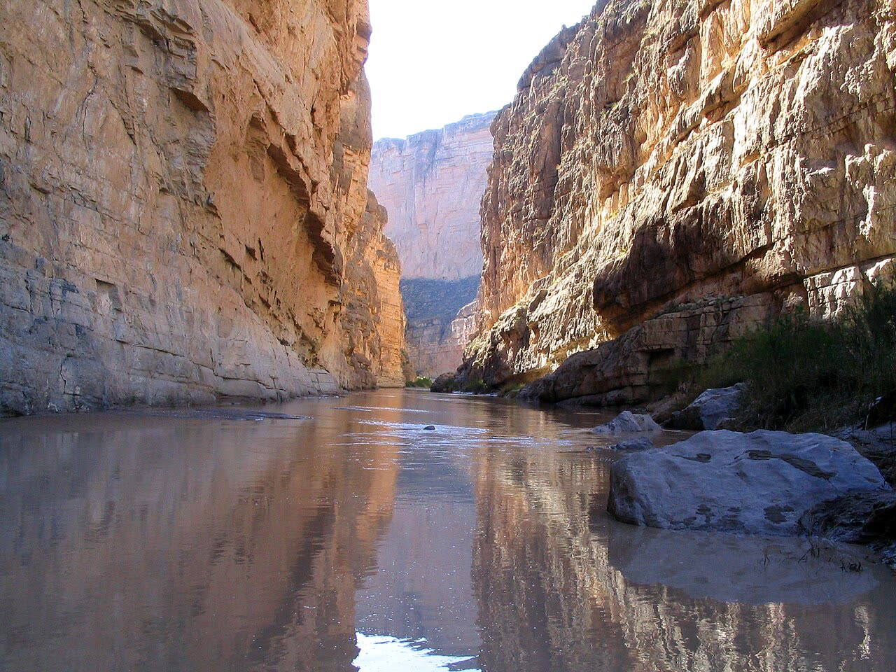

Corte suprema Usa, via libera al muro di Trump a Big Bend
Controllare il confine è compito dello Stato, ma 7,5 miliardi per il tratto con meno attraversamenti vanno giustificati con i fermi, non con i chilometri.
Redazione Contrappunto · aggiornato il 10.11.2026

,_Big_Bend_National_Park,_Texas.jpg){kind=link}
Big Bend è una regione di deserto e canyon nel Texas occidentale, lungo il Rio Grande, al confine con il Messico: comprende il parco nazionale omonimo. L'amministrazione Trump vuole costruirvi barriere, strade di pattuglia e sorveglianza. Lunedì 9 novembre 2026 la Corte suprema degli Stati Uniti ha accolto la richiesta urgente del governo e ha sospeso lo stop ai lavori deciso il 2 ottobre da una giudice federale di El Paso.
Vedi di più: 3 parole spiegate, cosa si racconta
Cosa si raccontaPer i giornali di destra (Breitbart, Fox News) è una vittoria dell'amministrazione sulla sicurezza del confine. Per NBC, CBS e Al Jazeera la Corte lascia ripartire i lavori mentre la causa continua; i ricorrenti parlano di distruzione irreversibile. Il dato che alcuni titoli sfumano: la decisione è provvisoria e non dice se il muro sia legittimo. [Breitbart] [Fox News] [NBC News] [CBS News] [Al Jazeera]
- Provvedimento d'urgenza (stay)
- Una decisione provvisoria della Corte su richiesta di una parte: sospende l'ordine di un giudice inferiore in attesa del processo. Non è una sentenza di merito.
- Waiver (deroga)
- Una legge del 1996 sull'immigrazione permette al segretario alla Sicurezza interna di sospendere leggi ambientali e di tutela del territorio nelle zone di «alto ingresso illegale», per costruire barriere in fretta.
- Fermi alla frontiera (apprehensions)
- Il numero di persone fermate dalla polizia di frontiera mentre cercano di entrare illegalmente: l'indicatore con cui il governo e i ricorrenti misurano dove si passa di più.
- La Corte suprema ha sospeso, con una decisione non firmata di cinque pagine, lo stop ai lavori a Big Bend; solo la giudice Jackson ha detto che avrebbe respinto la richiesta (NBC, CBS, Al Jazeera).
- La Corte dice che il governo è «molto probabilmente» in vantaggio perché la giudice di El Paso non aveva giurisdizione; la decisione resta valida finché la causa non si chiude o la Corte decide se occuparsene (NBC, Breitbart).
- Hanno fatto ricorso un gruppo ambientalista, un'associazione per una chiesa storica e una guida fluviale; il settore ha il 25% del confine ma una piccola quota dei fermi, e gli appalti sono 7,5 miliardi di dollari (CBS, Al Jazeera).
Per Breitbart e Fox è una vittoria sul confine; per NBC e CBS la Corte lascia ripartire i lavori mentre la causa continua; Al Jazeera titola che il muro nel parco può proseguire, ma il governo dice che dentro il parco non ci sarà il muro alto, solo strade e circa 17 miglia di barriere per veicoli. Il punto che manca ai titoli: la decisione è provvisoria e dice che la giudice non aveva il potere di decidere, non che il muro sia giusto. Quindi? Presidiare il confine spetta allo Stato, ma il tratto vale 7,5 miliardi di appalti e secondo i ricorrenti solo lo 0,3-2,2% dei fermi: i soldi pubblici vanno spesi dove si passa davvero. [1] [2] [3] [5] [4] [6]
La verifica punto per punto3 passaggi, 6 fonti
Qui sotto ogni cosa scritta sopra, una per una, con le fonti. Confermato: lo dice un documento originale o più fonti lette. Plausibile: lo riportano fonti serie, ma non abbiamo letto l'originale. Discordante: le fonti danno numeri diversi, e diciamo quali. Ipotesi e Opinione sono il nostro ragionamento, separato dai fatti.
Cosa ha deciso la Corte
Lunedì 9 novembre la Corte suprema, con una decisione non firmata di cinque pagine, ha accolto la richiesta urgente del governo e ha sospeso l'ingiunzione con cui la giudice federale di El Paso Kathleen Cardone, il 2 ottobre, aveva fermato i lavori nel settore di Big Bend. La Corte ha scritto che il governo è «exceedingly likely to prevail» sul fatto che la giudice non avesse giurisdizione, perché la legge del 1996 limita i ricorsi sulle barriere a quelli di violazione della Costituzione, e ha aggiunto che «there is no such thing as a ‘constitutional’ major-questions claim». L'ingiunzione, dice, «impedes the Government from advancing its ‘compelling interests’ in border security and integrity» (Al Jazeera, CBS). Solo la giudice Ketanji Brown Jackson ha detto che avrebbe respinto la richiesta, senza spiegare perché (NBC, CBS, Al Jazeera). Non è una sentenza sul merito: resta in vigore finché la causa a El Paso non si chiude o la Corte decide se occuparsene (Breitbart, Fox).
Chi ha fatto ricorso, e quanto costa
Hanno fatto causa il Center for Biological Diversity (gruppo ambientalista), Friends of the Ruidosa Church (associazione che restaura una chiesa storica) e una guida fluviale proprietaria di terreni nella zona: contestano tre deroghe alle leggi ambientali firmate dalla segretaria alla Sicurezza interna Kristi Noem (febbraio) e dal successore Markwayne Mullin (maggio e luglio), che permettono di non rispettare norme su specie protette e patrimonio storico (NBC, Al Jazeera). Il loro avvocato Laiken Jordahl ha detto che la decisione «clears the way for contractors to bulldoze pristine desert» prima che i giudici decidano se sia legale (NBC, CBS). Il governo risponde che il settore è un varco per cartelli e traffici; il solicitor general D. John Sauer parla di «massive vulnerability» se resta aperto (CBS). Per i ricorrenti il settore è il 25% del confine ma lo 0,3-2,2% dei fermi annui; Fox, citando Reuters, indica l'1,3% nel 2025. Sul costo, CBS (20 agosto) scrive che gli appalti di sicurezza per il settore valgono 7,5 miliardi di dollari, circa 14,5 milioni a miglio, e uno solo per i lavori nel parco 1,7 miliardi; non è un costo finale del muro.
Il confine si presidia e i rimpatri si fanno: è un compito dello Stato. Ma 7,5 miliardi di appalti, 14,5 milioni a miglio, per il tratto dove si passa meno chiedono una prova che nessuna fonte letta ha dato: quanti fermi in meno, a che costo per ogni fermo evitato. Meglio spendere dove gli attraversamenti ci sono e misurare i risultati, che stendere cemento e strade lungo un quarto del confine perché la legge lo permette.
Fonti6, tutte con il link
- Supreme Court allows Trump administration to resume border wall construction in Big Bend region (9 novembre 2026) (CBS News) · consultata il 10.11.2026
- Supreme Court paves way for Trump to build a section of his border wall in the Big Bend area of Texas (9 novembre 2026) (NBC News) · consultata il 10.11.2026
- US Supreme Court allows border wall in Big Bend National Park to proceed (9 novembre 2026) (Al Jazeera) · consultata il 10.11.2026
- Supreme Court Lifts Order Blocking Trump's Big Bend Border Wall (9 novembre 2026) (Breitbart) · consultata il 10.11.2026
- SCOTUS allows Trump admin to temporarily resume border construction in Texas' Big Bend (9 novembre 2026) (Fox News) · consultata il 10.11.2026
- What's happening at Big Bend? The fight to protect one of America's last wild places (20 agosto 2026) (CBS News) · consultata il 10.11.2026
Testo preparato con strumenti di intelligenza artificiale e pubblicato senza revisione umana. Come lavoriamo